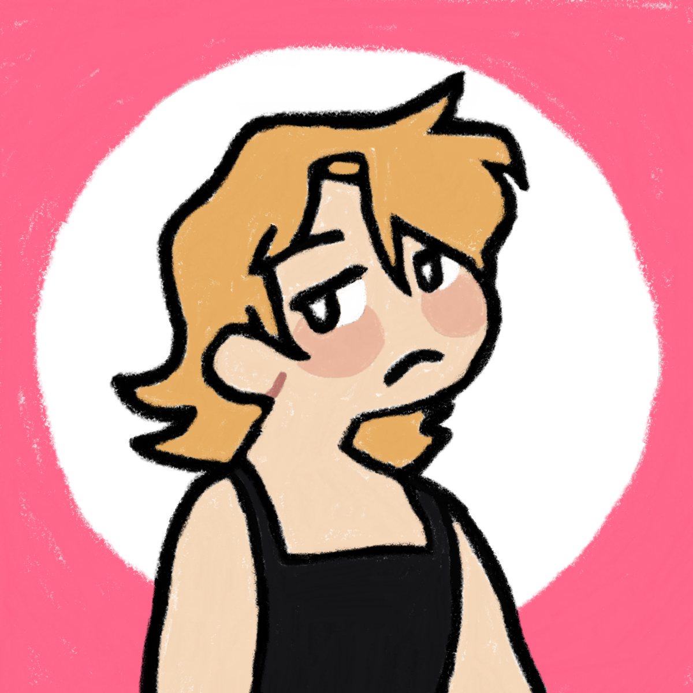

Hi there, and if you read the title of this page right, then you'd know that I'm Cass (they/she). To tell a little about myself, I am a nerd from the UK who has a strong passion for all things relating to the world of ICT, as well as the preservation of software, the Web, and other things relating to the Internet as a whole. In my spare time, I help run NeoZones, a webhost for myself and a few other of my friends, I am also rather active on its Discord server - do feel free to join, we won't bite, I can tell you that!
As I also go by the name Owly online, I thought it would be funny of me to buy the domain owly.fans for a decade as it sounds a bit like the name of a certain other website full of fans. If you want, you can also find me on my Masto where I post about a bunch of rubbish that you may (or more likely, may not) find interesting.
This site is growing all of the time, so do make sure that you add it to your bookmarks on your browser (use Firefox) and come back whenever.
Some relevant links of mine that you might like to go to are...
Copyright 2021 - by Cass "Owly" Python, licensed under CC BY-NC-SA 3.0.